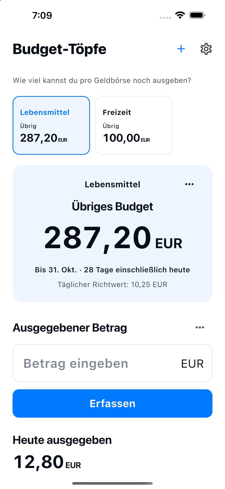

Erstelle einen Geldtopf mit eigenem Namen und Budget.
Wie viel kannst du pro Geldbörse noch ausgeben?
Lebensmittel. Freizeit.
Getrennte Budgets. Klare Restbeträge.
Teile dein Budget auf Lebensmittel, Freizeit und den Alltag auf. Erstelle eigene Geldtöpfe und sieh, wie viel in jedem noch übrig ist.
So funktioniert’s
Für iPhone und Android verfügbar

So funktioniert’s
Aufteilen. Eintragen. Den Rest sehen.
Wähle einen Geldtopf und trage deine Ausgabe ein.
Bearbeite Einträge oder füge Erstattungen im Verlauf hinzu.
Starte das nächste Budget selbst. Frühere Einträge bleiben erhalten.
Das Wesentliche
Deine Geldtöpfe.
Einfache Verwaltung.
- Name der Geldbörse
- Wähle einen Namen und ein Budget, etwa Lebensmittel, Freizeit oder Haushalt. Der erste Zeitraum ist der aktuelle Monat.
- Übriges Budget
- Übriges Budget = Budget − erfasste Ausgaben + Erstattungen. Es ist ein Richtwert aus deinen Eingaben, kein Bank- oder Bargeldbestand. Der Restbetrag einer anderen Geldbörse gleicht eine Überschreitung nicht aus.
- 10 Sprachen · 10 Währungen
- 日本語 / English / 한국어 / 简体中文 / 繁體中文 / Español / Français / Deutsch / Italiano / Português (Brasil)
JPY / USD / EUR / KRW / CNY / TWD / BRL / GBP / CAD / AUD
Einträge auf deinem Gerät
Kein Konto nötig.
Namen, Budgets, Währungen und Zeiträume der Töpfe sowie Beträge, Daten und Notizen von Ausgaben und Erstattungen werden in der Datenbank dieser App auf deinem Gerät gespeichert. Sie dienen dazu, das Budget und den Verlauf jedes Topfes anzuzeigen.
Ein Konto ist nicht erforderlich. Die App sendet deine Einträge nicht an Server des Entwicklers und enthält keine Werbung, Nutzungsanalyse oder Tracking. Das Betriebssystem kann Daten in Sicherungen oder Geräteübertragungen einschließen; die Wiederherstellung ist nicht garantiert. Ausgaben und Erstattungen kannst du im Verlauf löschen. Beim Archivieren eines Topfes bleiben seine Einträge erhalten. Eine Deinstallation kann lokale Einträge entfernen. Verwalte Systemsicherungen in den Geräte- oder Kontoeinstellungen.
Datenschutzerklärung →Budget-Töpfe
Für iPhone und Android verfügbar